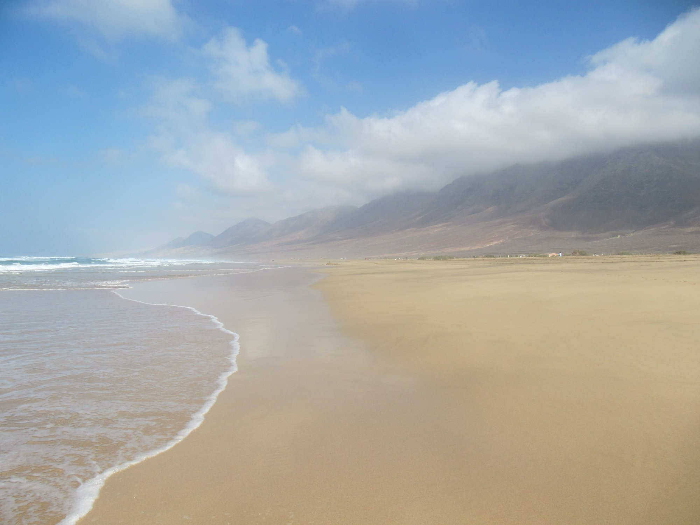
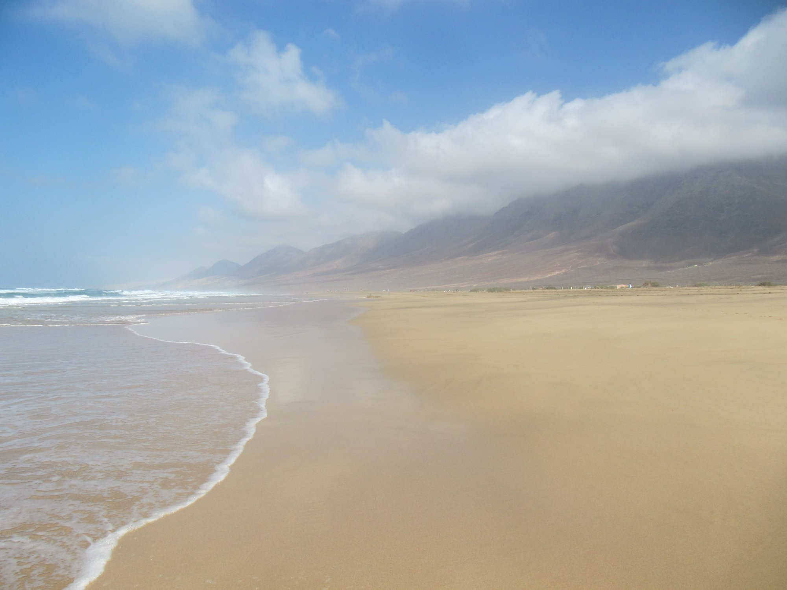

"Nikto z nás odtiaľto nevyviazne živý, tak prestaň byť na seba príliš prísny. Vychutnávaj si skvelé jedlá a nápoje. Prechádzaj sa na slnku, zaplávaj si v mori. Hovor pravdu, ktorú nosiš vo svojom srdci. Buď šialený. Buď milý. Buď vtipný. Buď svoj. Na iné veci nie je čas." Richard Gere
Jedna kvapka čistej lásky je ušľachtilejšia ako more vedomostí.František z Assisi
Volám sa Maja a cestovanie je pre mňa spôsob ako objavovať svet a zbierať zážitky. Na tejto stránke sa s tebou podelím o svoje fotografie, ktoré som získala počas cestovania. Zameriavam sa na svoje posledné cesty do USA a na Kanárske ostrovy.
Keď ťa zaujímajú jednotlivé krajiny tak použi interaktívny obrázok alebo linky hore.

Cestovanie po USA
V USA som bola celkovo 2x, počas týchto ciest som navštívila rôzne mestá a prírodné krásy, ktoré ma fascinovali.


 Las Vegas,Grand Canyon.
Las Vegas,Grand Canyon.
Cestovanie na Kanárske ostrovy
Kanárske ostrovy sú mojou obľúbenou destináciou pre ich krásne pláže, príjemné počasie a jedinečnú prírodu. Navštívila som tri z týchto ostrovov - Fuerteventuru 2x, Lanzarote 2x a Gran Canariu 1x. Fuerteventura je známa svojimi dlhými plážami. Lanzarote ma očarila svojou vulkanickou krajinou.
 
Fuerteventura - turistika a pláž Cofete.

Fuerteventura - turistika a pláž Cofete.